Soul styles
The red block's soul flying from a reached goal to the next red block, filmed in the game (test/experiments/soul-look.mjs): a goal reached on a small board, its finish skipped with a tap, then frame by frame. Each style can be forced with ?soul=<name>. The red band at the right edge points to the new goal's target, off screen.
Round four: in the game now
- In the game: souls are comets until the 7th goal in the world; after that each soul is a comet, a flame or a glint at random.
?soul=comet|flame|glintstill forces one. - Setting off: the ball sets off while the block's red is still drawing in, the red stretching after it.
- Sparks drift back along the path the soul came, and out to either side, instead of falling (the flame's embers also rise a little). The comet's sparks are the soft ones.
- Glint turns as it flies (its thin glint turning the other way), and its little glints turn as they twinkle.
- The hit: the new block no longer moves; it flashes nearly white in its own shape, and a ring goes out.
Comet ?soul=comet
A shaded red ball in a soft red glow, a long red streak, soft red sparks drifting back off it.
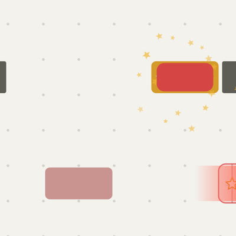
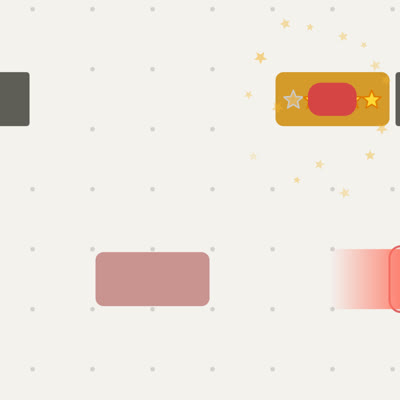
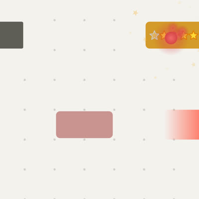
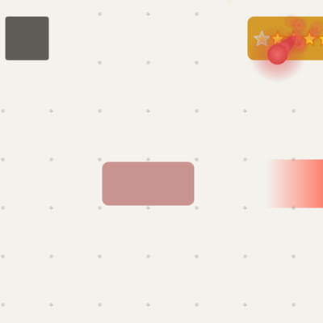
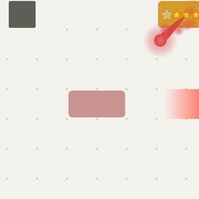
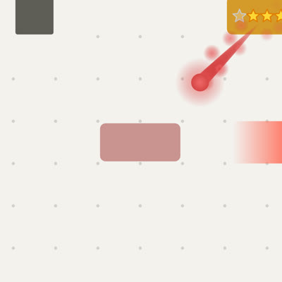
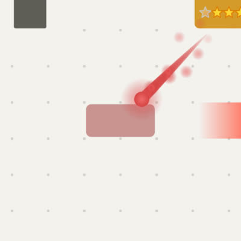

Flame ?soul=flame
A fireball (yellow middle, orange, red edge) whose glow flickers; three tongues of fire behind it, red round orange round yellow, each licking sideways on its own, wider towards the tail; embers in orange, yellow and red drifting back and up off it. Its ring is orange.
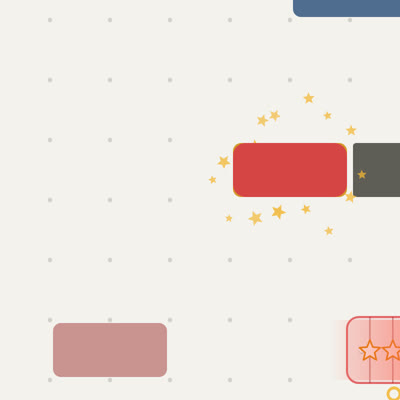
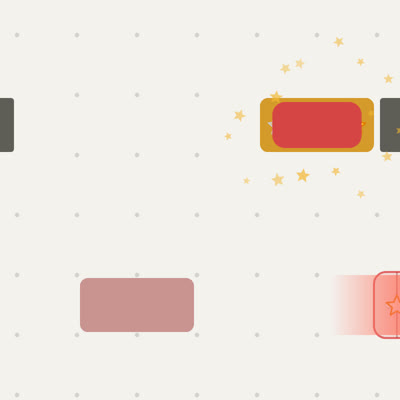
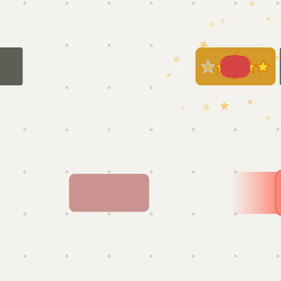
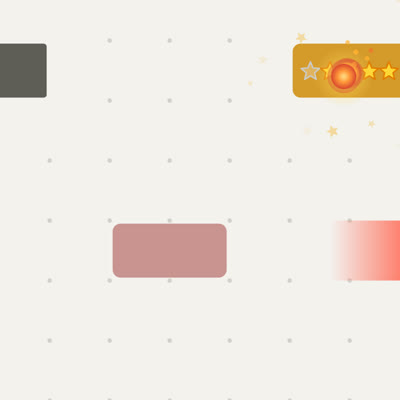
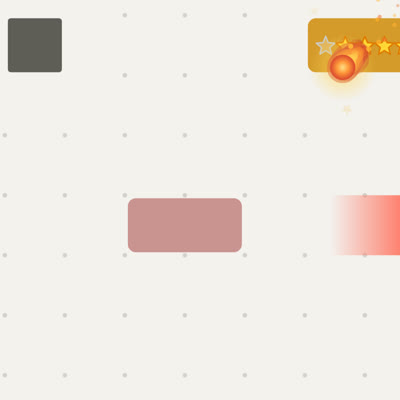
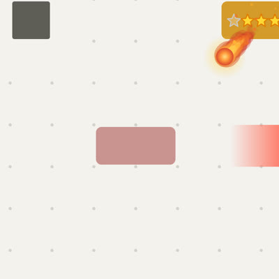
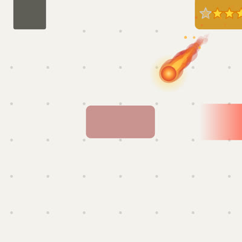
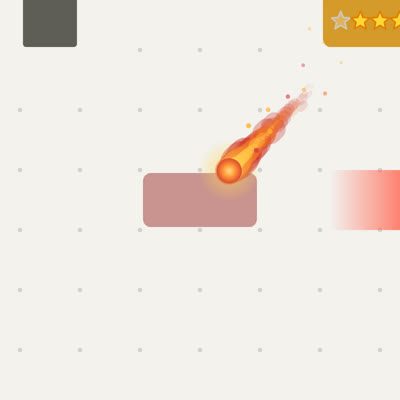
Glint ?soul=glint
A turning red four-pointed glint with a white one inside it and a white core, a thin pale glint turning the other way across it, its arms flashing out twice on the way; small red-and-white glints twinkle and turn along the streak behind it.
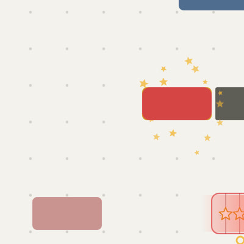
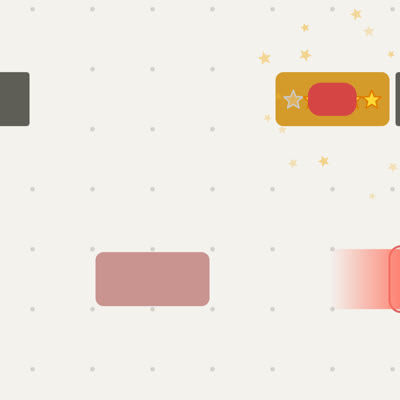
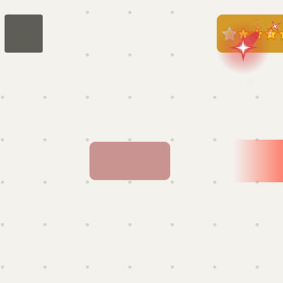
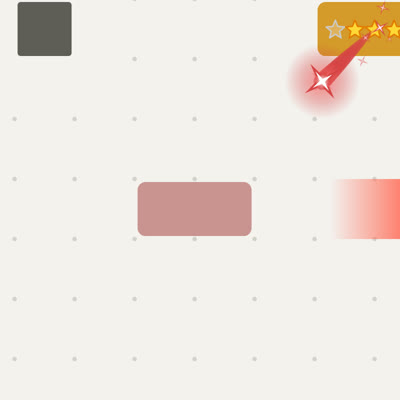
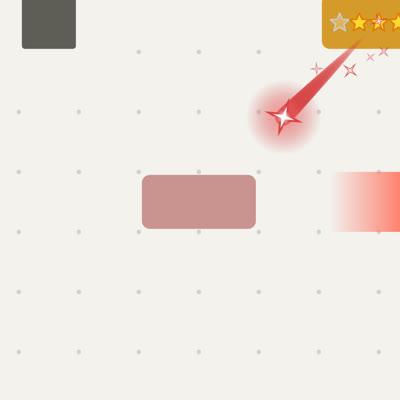
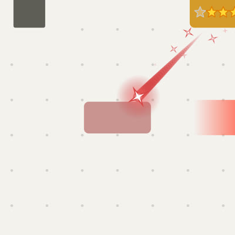